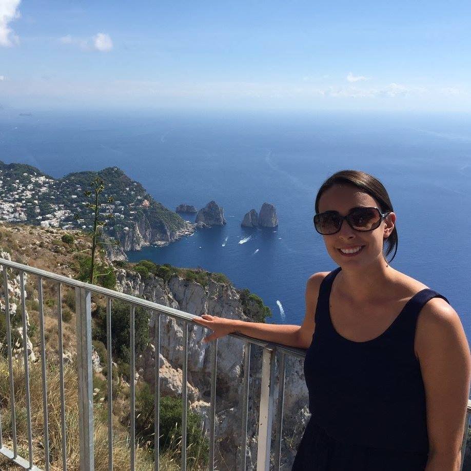

About Me
I grew up in New Providence, NJ and currently reside in Hoboken, NJ. I graduated from Ithaca College in 2012 with a bachelor's degree in Media Studies. Since graduating, I have held many different jobs in restaurants and in the TV/Film industry. I spent a year in Los Angeles freelancing as a script supervisor. I moved back to the NYC area in 2014 where I continued freelancing until I was given a position as a production assistant for the Investigation discovery show "On the Case with Paula Zahn." Over the next 3 years I moved my way up in the company to become a producer for the recreations department.
I recently decided the entertainment industry was no longer my passion and decided to pursue a career in web development. I am currently attending Rutgers Coding Bootcamp in order to gain a certificate in full stack web developemnt. I will graduate in November 2017 and look forward to beginning a new career in the field.